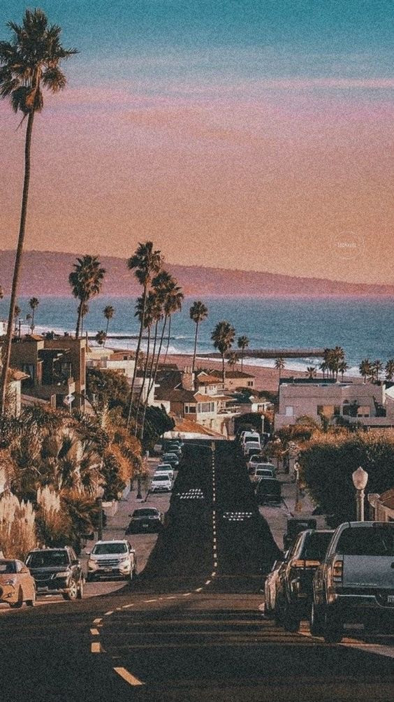

WORKING AT THE INTERSECTION OF WEB AND PRODUCT DESIGN TO
CREATE EXPERIENCES THAT DELIGHT, INSPIRE AND SHAPE THE
FUTURE OF THE INTERNET.
recent work
A COLLECTION OF WORK, PAST AND PRESENT. SOME BUILT FOR
TODAY, FOR TOMORROW AND OTHERS FOR THE FUTURE. FROM
EDITORIAL AND WEB, TO PRODUCT AND VISION WORK.

Kia Ora.I am a staff designerbased in New York, by way ofBerlin and originally from NewZealand. Currently atLinktree whereI help define thefuture of the web.
Last Updated:
My expertise is art direction, animation and anything interactive.
I’ve had over 8 years of industry experience, from working with
startups, agencies and international clients from concept to final
deliverables.